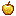

FX TOOLS / RETOS
Crono Hardcore.
Clasificación
1.
--:--:---/-
Por revelarVídeo pendiente
2.
--:--:---/-
Por revelarVídeo pendiente
3.
 1:24:381/1
1:24:381/1
RoesIG

Ultra HardcoreLos puestos 1 y 2 permanecerán ocultos hasta la publicación de sus vídeos.